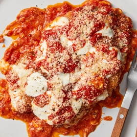

← All recipes
Chicken Parmesan

Servings: Yield: 6 servings ·
Ingredients
- 2 pounds boneless, skinless chicken, turkey or pork cutlets (or use chicken thighs for even more flavor)
- ½ cup all-purpose flour
- 3 large eggs, beaten
- 2 to 3 cups panko bread crumbs, as needed
- Kosher salt, as needed
- Black pepper, as needed
- Olive oil, for frying
- 5 cups Simple Tomato Sauce (see recipe)
- 1 cup finely grated Parmesan, preferably Parmigiano-Reggiano
- ½ pound fresh mozzarella, torn into bite-sized pieces
Directions
- Heat oven to 400 degrees. Place cutlets between two pieces of parchment or plastic wrap. Using a kitchen mallet or rolling pin, pound meat to even ¼-inch-thick slices.
- Place flour, eggs and panko into three wide, shallow bowls. Season meat generously with salt and pepper. Dip a piece in flour, then eggs, then coat with panko. Repeat until all the meat is coated.
- Fill a large skillet with ½-inch oil. Place over medium-high heat. When oil is hot, fry cutlets in batches, turning halfway through, until golden brown. Transfer to a paper towel-lined plate.
- Spoon a thin layer of sauce over the bottom of a 9-by-13-inch baking pan. Sprinkle one-third of the Parmesan over sauce. Place half of the cutlets over the Parmesan and top with half the mozzarella pieces. Top with half the remaining sauce, sprinkle with another third of the Parmesan, and repeat layering, ending with a final layer of sauce and Parmesan.
- Transfer pan to oven and bake until cheese is golden and casserole is bubbling, about 40 minutes. Let cool a few minutes before serving.
Original source: cooking.nytimes.com